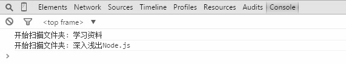

在11.7节提到的例子中，组合对象保存了它下面的子节点的引用，这是组合模式的特点，此时树结构是从上至下的。但有时候我们需要在子节点上保持对父节点的引用，比如在组合模式中使用职责链时，有可能需要让请求从子节点往父节点上冒泡传递。还有当我们删除某个文件的时候，实际上是从这个文件所在的上层文件夹中删除该文件的。
现在来改写扫描文件夹的代码，使得在扫描整个文件夹之前，我们可以先移除某一个具体的文件。
首先改写Folder类和File类，在这两个类的构造函数中，增加this.parent属性，并且在调用add方法的时候，正确设置文件或者文件夹的父节点：
var Folder = function( name ){
this.name = name;
this.parent = null; // 增加this.parent属性
this.files = [];
};
Folder.prototype.add = function( file ){
file.parent = this; // 设置父对象
this.files.push( file );
};
Folder.prototype.scan = function(){
console.log( '开始扫描文件夹: ' + this.name );
for ( var i = 0, file, files = this.files; file = files[ i++ ]; ){
file.scan();
}
};
接下来增加Folder.prototype.remove方法，表示移除该文件夹：
Folder.prototype.remove = function(){
if ( !this.parent ){ // 根节点或者树外的游离节点
return;
}
for ( var files = this.parent.files, l = files.length - 1; l >=0; l-- ){
var file = files[ l ];
if ( file === this ){
files.splice( l, 1 );
}
}
};
在 File.prototype.remove方法里，首先会判断this.parent，如果this.parent为null，那么这个文件夹要么是树的根节点，要么是还没有添加到树的游离节点，这时候没有节点需要从树中移除，我们暂且让remove方法直接return，表示不做任何操作。
如果this.parent不为null，则说明该文件夹有父节点存在，此时遍历父节点中保存的子节点列表，删除想要删除的子节点。
File类的实现基本一致：
var File = function( name ){
this.name = name;
this.parent = null;
};
File.prototype.add = function(){
throw new Error( '不能添加在文件下面' );
};
File.prototype.scan = function(){
console.log( '开始扫描文件: ' + this.name );
};
File.prototype.remove = function(){
if ( !this.parent ){ // 根节点或者树外的游离节点
return;
}
for ( var files = this.parent.files, l = files.length - 1; l >=0; l-- ){
var file = files[ l ];
if ( file === this ){
files.splice( l, 1 );
}
}
};
下面测试一下我们的移除文件功能：
var folder = new Folder( '学习资料' );
var folder1 = new Folder( 'JavaScript' );
var file1 = new Folder ( '深入浅出Node.js' );
folder1.add( new File( 'JavaScript设计模式与开发实践' ) );
folder.add( folder1 );
folder.add( file1 );
folder1.remove(); // 移除文件夹
folder.scan();
执行结果如图10-5所示。

图 10-5